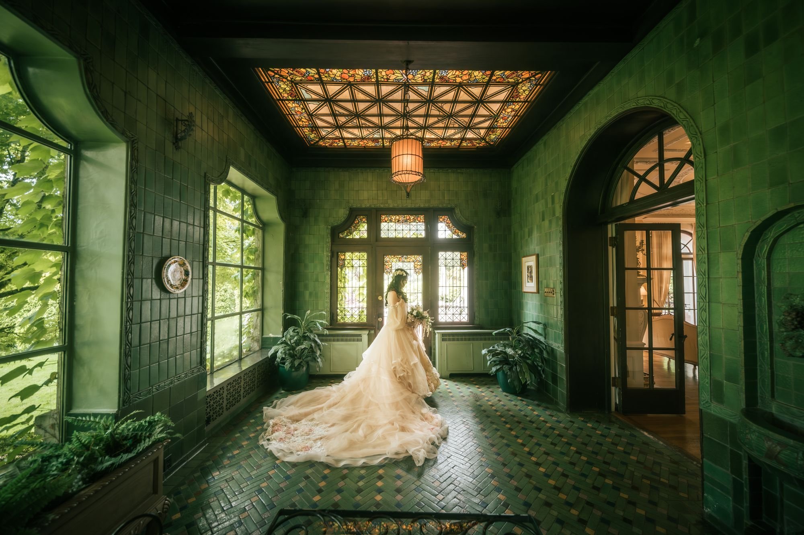
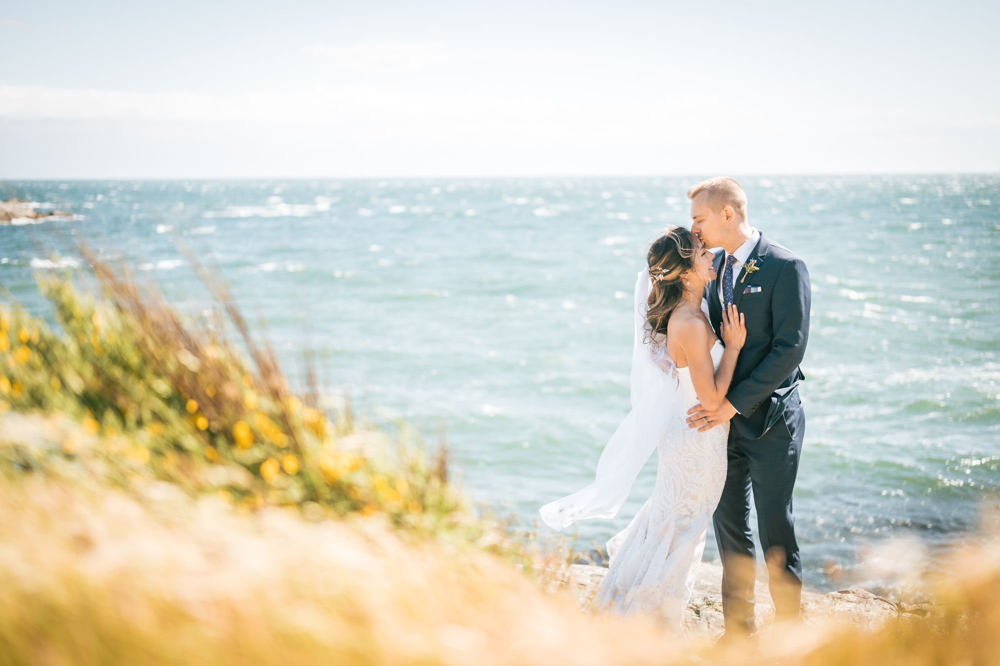
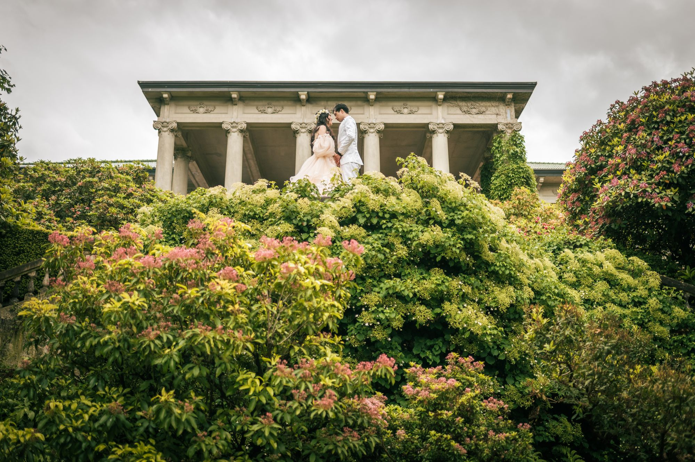
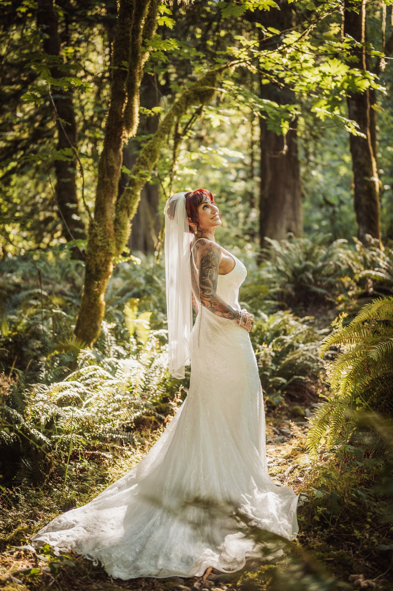
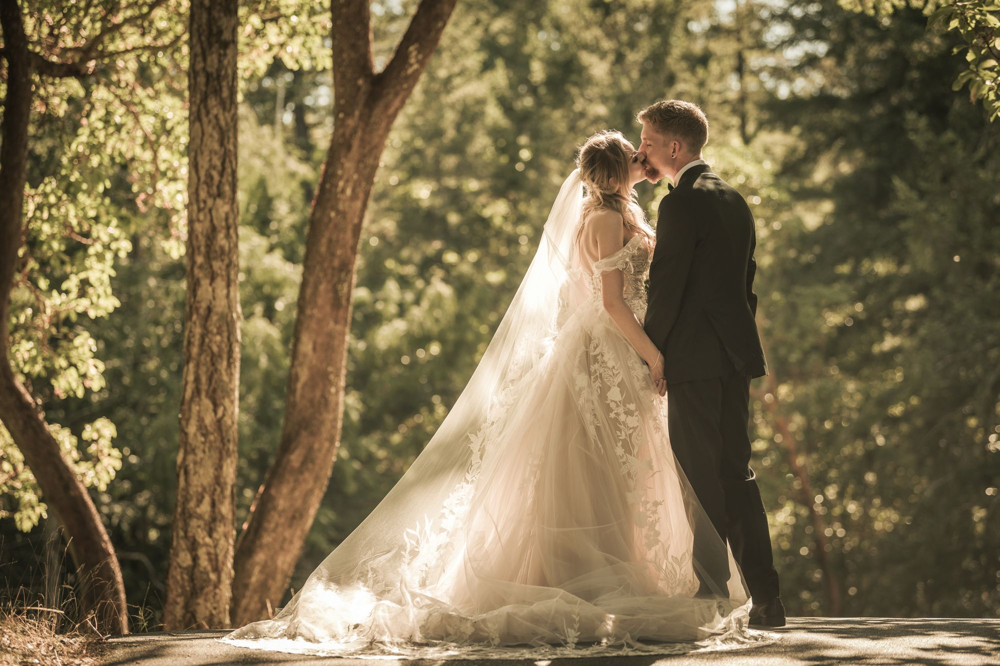

A well-structured timeline is the single most important thing you can do for your wedding photography. It sounds simple, but the difference between a relaxed, image-rich day and a frantic one often comes down to how the hours are planned — weeks before the wedding itself.

Start With the Golden Hour
Before you lock in anything else, find out when the sun sets on your wedding day and work backward. If your ceremony is at 4pm and sunset is at 8:15pm, your ideal window for couple portraits is roughly 6:45–7:45pm. This gives you the warm, directional light that's responsible for some of the most cherished images from your day.
Everything else — hair and makeup timing, first look scheduling, reception entrance — should flow from this anchor point.


The Getting Ready Window
I typically arrive 90 minutes before the ceremony for candid preparation shots. This gives me time to photograph the dress hanging, shoes, rings, invitation suite, and the beginning of hair and makeup without feeling rushed. If your hair and makeup team is running behind, this buffer disappears — so build in a 15-minute cushion and keep your wedding party aware of it.
A practical tip: put the dress on last. Once it's on, avoid sitting on it or leaning against anything with product on your clothes. Schedule the dress shots and a few portraits with your closest people right after you get dressed, while the dress is pristine and your energy is high.

The First Look: Still Worth It?
Absolutely — but only if it serves your day, not just your timeline. A first look allows you to get the emotional reactions (the tears, the laughter, the "wow") captured privately, before the chaos of the ceremony. It also means you can do all your couple portraits before the ceremony, freeing up cocktail hour for your guests — and for you to actually enjoy it.
That said, if the idea of a first look feels inauthentic to you, skip it. The traditional approach of seeing each other for the first time at the end of the aisle is genuinely magical in its own right. The right choice is the one that feels true to you.


Family Formals: Keep It Efficient
Family formals are often where timelines fall apart. The solution is preparation, not speed. Before your wedding day, assign a trusted family member or wedding party member to be the "runner" — someone who knows the shot list and can efficiently gather people.
Keep your family formal list to 10–12 groupings maximum. Any more than that and you'll sacrifice time from your cocktail hour and couple portraits. For a 4pm ceremony, plan for 20–25 minutes of family formal time immediately following the ceremony (while guests move to cocktail hour).

Couple Portraits: Quality Over Quantity
I'd rather have 35 minutes with you at the best light than 60 minutes in harsh midday sun. If we're shooting in golden hour, we can capture 20+ images that you'll genuinely love in that window. The key is that you trust me to direct you — my job is to make you look and feel natural, not stiff.
If your venue has a beautiful architectural feature, a garden, or a waterfront — let me know in advance so I can scout and plan. The best couple portraits come from knowing the location before the day, not discovering it during it.

A Sample 8-Hour Day Timeline
Here's a framework for an 8-hour coverage day with a first look:
12:00pm — Photographer arrives, candid getting ready
1:30pm — Bride gets dressed
2:00pm — First look & couple portraits
3:00pm — Wedding party photos (if applicable)
3:45pm — Guests arrive, bride & groom hidden
4:00pm — Ceremony
4:30pm — Family formals
5:00pm — Cocktail hour (photographer reviews coverage, guests mingle)
6:15pm — Golden hour couple portraits
7:00pm — Reception entrance
7:30pm — Toasts begin
8:00pm — Open dancing, candid coverage


Every wedding is different, and your timeline should reflect your priorities. If dancing is everything, we build around the first dance. If you're having a small ceremony with a big party, we structure the day differently. Let's talk about your day.